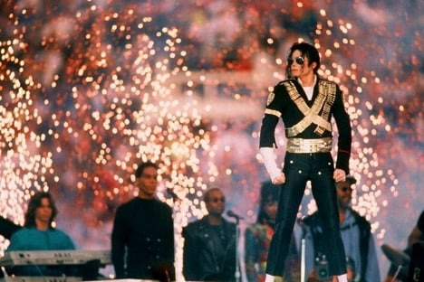

迈克尔杰克逊生平
1958-1966
早年生活和杰克逊五人组
迈克尔· 杰克逊于1958年8月29日的晚上19时33分出生在美国印第安纳州加里市圣玛丽怜悯医院。
杰克逊一家在芝加哥大都市区内的工业城市加里市的一个三居室房子居住，属于非裔美国工薪阶层，迈克尔在父母十名孩子中排行第八。
母亲凯瑟琳·杰克逊是一位虔诚的耶和华见证人，父亲约瑟夫·杰克逊是一位钢厂工人，是一个名为“猎鹰”的节奏蓝调乐队的成员。
小时候，杰克逊的父亲经常虐待他，造成了他日后的一系列问题，包括外貌焦虑，噩梦和睡眠问题等，但杰克逊依然相信父亲的严厉管教与他的成功有很大的关系。
1964年，迈克尔和马龙加入杰克逊兄弟乐队，乐队由他们的哥哥杰基、蒂托和杰梅因创立，主要是做和声，并负责演奏康加鼓和手鼓。1966年，乐队凭借迈克尔主唱的几首摩城音乐与翻唱詹姆斯·布朗的歌曲《I Got You》（I Feel Good）赢得了当地的一个才艺比赛。
1972-1975
1972到1975年间，迈克尔与摩城唱片合作发行了四张个人专辑：《该去那里》、《小班的歌》、《音乐与我》及《永远的迈克尔》。
乐队1973年开始销量下滑，乐队成员对摩城唱片对他们才华创意的限制深感不满，最终于1975年选择与摩城唱片解约。
1975年6月，杰克逊五人组与CBS旗下的史诗唱片签约并重新命名组合，兰迪在此期间加入乐队，杰梅因则选择留守摩城唱片并单飞。
他们继续全球巡演，在1976到1984年间又发布了6张专辑。此时，迈克尔成为了乐队主创，写下了诸如《Shake Your Body》（Down to the Ground）、《This Place Hotel》和《Can You Feel It》等歌曲。
在1979年一次舞蹈排练时，杰克逊鼻子受伤，随后的鼻整形手术并不成功，他总觉得呼吸困难，并认为这会影响他的音乐生涯，杰克逊随后的鼻部手术都是由史蒂芬·赫夫林主刀。
琼斯和杰克逊共同出品了专辑《Off The Wall》。专辑中的歌曲由迈克尔·杰克逊·、鲁德·坦普尔顿、史提夫·汪达与保罗·麦卡特尼创作。1979年专辑发布后，专辑成为首张诞生了4支美国前十单曲的专辑，单曲中《Don't Stop 'til You Get Enough》和《Rock With You》成为冠军单曲，专辑登上“公告牌”第三位，全球销量超过2000万。
1980年，杰克逊获得三项美国音乐奖。同年，他也斩获公告牌年终奖与一项格林美奖。杰克逊于1981年再次获得两项美国音乐奖。
1982-1983
发行《Thriller》和《摩城唱片25周年：昨日，今日，明日》
1982年末，专辑《Thriller》的发行获得了更大的成功。专辑为迈克尔赢得了另外七个格林美奖和八个全美音乐奖，其中包括“最佳新人奖”，迈克尔成为赢得该奖项的最年轻的艺术家。
《Thriller》成为1983年全球范围内的最热销专辑，并且成为美国有史以来销量最高的专辑，也是全球销量最高的专辑，据估计销量达到6500万张。专辑在公告牌二百强专辑榜占据第一名的位置长达37个周并且在前十停留了连续的80个星期。这也是第一张专辑拥有7首公告牌一百强歌曲榜十强单曲，包括《Billie Jean》、《Beat It》及《Wanna Be Startin' Somethin'》。
《Thriller》为迈克尔和昆西·琼斯赢得了1983年“格林美年度非古典类制作人”、为迈克尔赢得了“最佳流行音乐男歌手”，也成为了当年的“年度专辑”。《Beat It》为迈克尔赢得了“最佳摇滚男歌手”。《Billie Jean》赢得了“最佳节奏蓝调歌曲”，并为迈克尔赢得了“最佳节奏蓝调男歌手”[30]《Thriller》也在1984年赢得了另外一个格林美奖项，“最佳非古典混音录制奖”。
1984年，迈克尔赢得了AMA荣誉奖、最喜爱灵魂/节奏蓝调男歌手奖、最喜爱流行/摇滚男歌手奖。歌曲《Beat It》为迈克尔赢得了最喜爱灵魂/节奏蓝调影片奖、最喜爱流行/摇滚影片奖、最喜爱流行/摇滚单曲奖。专辑《Thriller》获得了最喜爱灵魂/节奏蓝调专辑奖、最喜爱流行/摇滚专辑奖。
在此之外，迈克尔在1983年发布了由约翰·兰迪斯导演的14分钟长的《Thriller》音乐影片。它在当时创立不久的电视频道全球音乐电视台中“定义了音乐影片并且打破了种族障碍”。
1985年，《迈克尔·杰克逊《Thriller》的制作》赢得“格林美最佳长篇音乐影片奖”。《时代》杂志这样描述迈克尔的影响：“唱片之星，广播之星，摇滚音乐影片之星。一位拯救了音乐事业的人。一位拥有奇幻双脚的舞者。一位打破所有品味、风格和肤色障碍的歌手”。《纽约时报》写到：“在流行乐坛，只有迈克尔·杰克逊和其余所有人”。
杰克逊生涯的临界点出现在1983年3月25日，迈克尔与他的兄弟们重聚，并与其他摩城唱片的明星进行了一场传奇性的现场表演，在帕萨迪纳市政礼堂录制，作为NBC的电视特别节目，命名为《摩城唱片25周年：昨日，今日，明日》（Motown 25: Yesterday, Today, Forever）。节目于1983年5月16日播出，据估计达到了4700万的收视率。
表演最让人记忆犹新的是迈克尔《Billie Jean》的独唱表演，这为迈克尔赢得了他的第一个艾美奖提名。迈克尔身穿特制的带有亮片的黑色夹克，手戴莱茵石镶嵌的高尔夫手套，首次表演他招牌的月球漫步。
《滚石》杂志的记者吉尔摩·米卡尔称“有些时候，你知道自己正听到或看到的是一些非凡的东西……那正是那天晚上的情景。”《艾德·沙利文秀》将迈克尔的表演与猫王和披头士作比较。《纽约时报》的艺术评论家安娜·凯瑟高夫写到“他所著名的月球漫步是对他舞蹈风格一种恰当的比喻。他是如何做到的？作为技艺精湛的人，他是一位伟大的幻术师，一位天才横溢的哑剧表演者。他能在俯身滑步的同时保持一只腿伸直，这是需要完美的时机的。” 伯瑞·高迪评论称“在《Billie Jean》的一开始我感到很困惑，但当他开始做起月球漫步的时候，我惊呆了，这就像魔术一样，迈克尔·杰克逊进到了轨道上，根本停不下来。”
.
1984-1985
为百事公司拍摄广告、发行《We Are The World》
VIDEO
1984年1月27日，杰克逊和其他几位家庭成员为百事可乐拍摄广告，广告由菲尔·杜森伯里以及广告公司BBDO和百事全球创意负责人，艾伦·破塔斯在洛杉矶雪兰大剧院监制拍摄。在拍摄广告中设计的虚拟音乐会时，事故发生了，烟火烧伤了杰克逊，导致他头皮二级烧伤。杰克逊为了掩盖头皮上的疤痕进行了治疗，不久又第三次进行鼻整形手术。百事公司最终决定庭外和解，随后杰克逊为坐落于科尔夫城城的布罗特慢医疗中心捐款150万美元，为此，该医疗中心改名“迈克尔·杰克逊烧伤康复中心”。
1985年他与莱昂纳尔·里奇合作的以关爱美国和非洲的贫困儿童为主题的慈善歌曲《We Are The World》跻身历史上销量最高的单曲行列，销量接近三千万，两人决定捐赠数百万美元以救济贫困儿童。1986年，两人因《We Are The World》赢得四项格林美奖（杰克逊获得格林美年度歌曲奖）。美国音乐奖负责人没有将词曲列入竞奖单元，因为他们认为这并不合适，但杰克逊因作曲获得荣誉奖项。
1986-1990
发行《Bad》、拍摄电影、出版自传与建造梦幻庄园
1987年，杰克逊脱离耶和华见证人教会，原因是他们对《Thriller》音乐影片的反对。业界都在期盼新专辑的诞生，于是杰克逊五年内第一次推出新专辑《Bad》。
专辑《Bad》中有7首歌作为单曲最终在美国发行，其中《I Just Can't Stop Loving You》（、《Bad》、《The Way You Make Me Feel》、《Man In The Mirror》以及《Dirty Diana》最终成为了冠军单曲，这张专辑也是在Hot 100榜单上拥有冠军单曲最多的专辑，《Thriller》也没有取得这样的成绩。
《Bad》的音乐影片仍然是杰克逊标志性作品之一。
凭借专辑《Bad》，布鲁斯·斯维顿和霍伯特·贾提卡于1988年获得一项格林美奖，迈克尔·杰克逊凭借《Leave Me Alone》于1989年获得最佳音乐影片奖。同年，杰克逊凭借该专辑中有5支冠军单曲并在25个国家成为冠军专辑的开创性表现，也因为《Bad》是1987-1988年全球最畅销专辑而获得美国音乐奖的成就奖。1988年，歌曲《Bad》获得美国音乐奖最受欢迎的灵魂节奏蓝调单曲。
Bad世界巡回演唱会于该年9月12日开始，次年1月14日结束。仅在日本，巡演就吸引了57万观众，几乎是之前记录的3倍。当杰克逊到温布利体育馆进行7场演出时有50.4万观众，创造了吉尼斯世界纪录。巡演期间举办了123场演唱会，观众总数约440万。Bad的巡演成了杰克逊的最后的美国巡演，虽然后来杰克逊也到夏威夷开过演唱会。
1988年，杰克逊出版了他唯一的一本个人传记《月球漫步》，此书历经四年著成，卖出20万份。杰克逊在书中讲述了他的童年，杰克逊五人组，以及他所受的痛苦。他也谈及了他的面容，表明了他做过两次鼻整形手术与酒窝手术。他将他的容貌变化的主要原因归结于青春期、减肥、严格的素食饮食、发型的改变和舞台光线。此书登上了《纽约时报》畅销榜的首位。他随后又拍摄了同名电影，乔·佩西参演。原计划于影院上映的电影最终被拍成了电视电影，仅仅在德国登陆影院。电影雄霸“公告牌”音乐影片榜榜首22周，最终被《迈克尔·杰克逊：传奇继续》取代。
1988年3月，杰克逊在加州圣伊内斯附近以1700万美元买下一片土地，建造梦幻庄园私人公园。他安置了摩天轮、一座小型动物园、一座影院、还有保安哨塔，公园面积2,700-英亩（11-平方千米）。2003年，公园的估计价值在1亿左右。1989年，他的年收入在1.25亿左右。不久之后，他成为了首位出现在苏联电视上的西方人。
他的成功使他赢得了“流行音乐之王”的称号。伊莉莎白·泰莱在1989年灵魂列车音乐奖的颁奖典礼上的致辞使这一称号广为人知，宣称他是“流行乐、摇滚乐和灵魂乐的真正王者”。乔治·赫伯特·沃克·布什总统为他颁发白宫“十年最佳艺术家”奖。自1985至1990年，他为联合黑人学院基金会捐款超过50万美元，透过单曲《镜中人》取得的收入全部捐献。
1991-1993
发行《Dangerous》、创立治愈世界基金会和参加超级碗的中场休息

1991年3月，杰克逊以6500万美元与索尼续约，这在当时是破纪录的交易，打破了尼尔·戴门与哥伦比亚唱片的续约金额。他于1991年发行了他的第八张专辑《Dangerous》。专辑与泰迪·莱利共同制作，莱利说服迈克尔在他的专辑中首次加入饶舌的曲风。
在美国，专辑的第一首单曲《Black Or White》非常热销，在公告牌百强单曲榜第一的位置停留了七周，在全球的排行榜也有类似的表现。第二支单曲《铭记这一刻》（Remember the Time）在美国前五名的位置上停留了五周，在公告牌百强单曲榜中最高位置达到第三位。1992年底的公告牌音乐奖中，《Dangerous》和《Black Or White》分别被评为全球年度最畅销的专辑和单曲。此外，他还获得了20世纪80年代销量最高艺术家的奖项。1993年，杰克逊在灵魂列车音乐奖坐在椅子上表演歌曲，他说这是因为在排练时受伤所致。在英国和其他欧洲地区，《Heal The World》成为专辑中最热销的歌曲；在英国共销售了45万张，在排行榜第二的位置上停留了五周。
杰克逊于1992年创立了治愈世界基金会。慈善组织将贫困儿童带到杰克逊的梦幻庄园，享受主题公园的游乐设施。基金会在世界范围内向受战争、贫穷和疾病影响的儿童资助了数百万美元。同年，杰克逊出版了名为《梦舞诗话》（Dancing the Dream）的诗歌文集，这是他所出版的第二本书。尽管这本书的发行在商业上是一个成功，展现出杰克逊更亲密的一面，但在当时却遭到一些批判。
Dangerous世界巡回演唱会于1992年6月27日展开，1993年11月11日结束。在70场演唱会中共有350万人到场，收入超过1亿美元。杰克逊将演唱会的转播权以2000万美元的价格卖给HBO电视台，创下了至今无人打破的现场演唱会转播费用的最高记录。
在瑞安·怀特生病去世之后，杰克逊帮助了公众对艾滋病的注意，艾滋病在当时还是具有争议的事情。他公开在比尔·克林顿的就职晚宴上请求克林顿政府给予艾滋病慈善机构和研究机构更多的基金。杰克逊高调出访非洲，参观了几个国家，其中包括加蓬和埃及。他在加蓬的第一站受到了超过10万人的热情欢迎，其中有人携带着“迈克尔，欢迎回家”的标语。在科特迪瓦期间，杰克逊被部落酋长加冕为“萨尼王”（King Sani）。他用英语和法语做出了感谢，在王位的正式文件上签字，在进行仪式舞蹈时坐上了金色的宝座。 （瑞安·怀特患有血友病，在一次输血过程中由于疏忽被输入带有艾滋病毒的血液，导致他患有艾滋病，与疾病抗争了5年后死亡）
1993年1月，杰克逊在第二十七届超级碗的中场休息时段现身。因为几年以来人们对中场休息的兴趣锐减，国家橄榄球联盟（NFL）决定寻求大牌明星来吸引观众并提高收视率，杰克逊因为他的知名度和吸引力而入选。这也是超级碗首次在中场休息的收视率高于比赛本身。表演一开始，杰克逊从舞台下方跳出，与此同时他身后的焰火绽放开来。他一动不动地站着，“紧握着拳头，犹如雕像的姿态”，身穿金色和黑色相间衣服，头戴太阳镜。他保持完全不动的姿态长达一分半钟，观众持续欢呼。然后他缓缓地摘下太阳镜，扔向人群，演唱了四首歌曲：《Jam》、《Billie Jean》、《Black Or White》和《Heal The World》。
杰克逊的专辑《Dangerous》在排行榜上上升了90位。杰克逊在第35届格林美奖上被授予了格林美传奇奖，《Black Or White》获得了“最佳声乐表现奖”的提名，《Jam》获得了“最佳R&B声乐表现奖”和“最佳R&B歌曲”的提名。专辑《Dangerous》获得了“非古典类最佳策划奖”，布鲁斯·斯维顿和泰迪·莱利获得了此奖项。同年，迈克尔·杰克逊赢得了三个美国音乐奖，分别是“最受欢迎流行/摇滚专辑”（专辑《Dangerous》）、“最受欢迎灵魂/R&B单曲”（歌曲《Remember The Time》）以及“国际艺术家奖”，杰克逊因为在全球的演出和人道主义关切而获得此奖项，也是第一位赢得该奖项的艺术家。这个奖项此后也以他的名字命名。
1994
第一次婚姻
1994年5月，杰克逊与猫王的女儿莉萨·玛丽·普雷斯利结婚。
两人于1975年第一次相识，当时7岁的普雷斯利参加了杰克逊家庭在米高梅酒店赌场举行的演唱会。根据普雷斯利的一位朋友回忆“他们成年时期的友谊始于1992年11月的洛杉矶”。他们每天都透过电话联系对方。
由于性侵犯儿童案事发，普雷斯利成为了杰克逊情感的依赖和支持；她开始关注他的每况愈下的健康和对药物的依赖。普雷斯利解释说，“我相信他没有做任何错事，他是被人冤枉的，并且是的，我开始爱上他了，我想救他，我觉得我能做到这一点。”她最终说服了杰克逊在庭外和解此案并且暂时疗养以恢复身体。
杰克逊于1993年秋天通电向普雷斯利求婚，说“如果我要你嫁给我，你会这么做吗？”他们的婚礼在多米尼加共和国秘密地举行，将近两个月之后仍在否认。用她的话说，婚姻是“一对夫妻的生活……是性情活跃的”。在当时，有小报媒体猜测，这场婚姻是撑起杰克逊公众形象的策略。两人的婚姻持续了不到两年的时间，最后以友好式的离婚协议而结束。
2010年普雷斯利在接受奥普拉采访时承认他们花了四年多的时间想要“破镜重圆但最后分手”，直到她决定停下来。
1996-1999
发行《HIStory》与第二段婚姻
1995年，杰克逊将他的联合电视音乐和索尼音乐出版部门合并，创建了索尼/联合电视音乐出版。
杰克逊持有公司一半的所有权，赚取了前期950万美元以及很多歌曲的版权。之后，他发行了双唱片专辑《他的历史：昨日，今日，明日－第一辑》。第一张唱片名为《HIStory Begins》，是一张他打榜歌曲的精选集，后来于2001年以《Greatest Hits: HIStory, Volume I》命名重新发现。第二张唱片名为《HIStory Continues》，包括了13首新歌及2首翻唱歌曲。
专辑登上了排行榜的首位，在美国销量达到700万张。专辑也是有史以来销量最多的多唱片专辑，全球的销量达到2000万套（4000万张）。《他的历史》也获得了格莱美年度专辑的提名。
单曲《Scream/Childhood》中的《Scream》是杰克逊与他的妹妹珍妮·杰克逊合唱的歌曲。歌曲将矛头直指他受到1993年性侵犯儿童指控时媒体对他的负面报道。歌曲刚刚发行就登上了公告牌百强单曲榜的第五名，这也是该榜单刚发行的歌曲打榜的最高纪录，歌曲也获得了格莱美“最佳流行合唱音乐奖”。
《You Are Not Alone》是专辑中第二首发行的单曲，歌曲是吉尼斯世界纪录认证美国公告牌首支空降冠军单曲。这首歌被看作是杰克逊在艺术和商业上的一个重要的成功，获得了格莱美“最佳流行声乐表演奖”的提名。
《Earth Song》是专辑中第三首发行的单曲，登上了英国单曲排行榜的首位长达六周，歌曲的销量达到了一百万张，成为杰克逊在英国最成功的单曲。
歌曲《They Don't Care About Us》的歌词引发了争议，反诽谤联盟和其他组织批评部分歌词涉嫌反犹太主义，对此，杰克逊迅速推出了不带冒犯意味歌词的修订版本。
1996年，《Scream》赢得了格莱美“最佳短篇音乐影片奖”，杰克逊获得了美国音乐奖“最受欢迎流行/摇滚男歌手”。
专辑跟随着的是备受好评的他的历史世界巡回演唱会，巡演于1996年9月7日展开，1997年10月15日结束。杰克逊在58个城市的82场演唱会上表演，共计450万歌迷入场，总收入高达1.65亿美元。演出横跨了五大洲的35个国家，成为杰克逊在观众人数方面最成功的巡回演唱会。
在巡演期间，杰克逊与一名皮肤科护士，他多年的朋友黛比·罗薇结婚，临时举行的仪式在澳大利亚悉尼举行。在当时，罗薇已经怀孕大约六个月。起初，罗薇和杰克逊并没有计划结婚，但是杰克逊的母亲凯瑟琳说服他们这样做。
长子迈克尔·约瑟夫·杰克逊一世（常称作“普林斯”，英语：Prince，意为王子）于1997年2月13日生于洛杉矶市锡安山医疗中心；帕丽丝·迈克尔·凯瑟琳·杰克逊则在1998年4月3日生于洛杉矶市比佛利山的一间疼痛科诊所出生。
杰克逊和罗薇于1999年友好的离婚，杰克逊得到了孩子全部的监护权，但是随后对子女监护权的诉讼直到2006年两人才达成了共识。
1997年，杰克逊发行了混音专辑《Blood on the Dance Floor: HIStory in the Mix》，专辑包含了《他的历史》专辑中打榜歌曲的混音版本和5首新歌。销量在全球范围内达到了600万张，是有史以来销量最高的混音专辑。
专辑和主打歌曲《Blood on the Dance Floor》登上了英国排行榜的榜首。在美国，专辑被认定为白金唱片，但在排行榜上只达到了24名的位置。《福布斯》杂志指出杰克逊的年度收入在1996年为3500万美元，1997为2000万美元。
1999年6月，杰克逊参与了多项慈善活动。
他在意大利的摩德纳参加了卢奇亚诺·帕瓦罗蒂的慈善募捐音乐会。这场演出是为支持为名“War Child”（战争儿童）的非营利组织，共为南斯拉夫联邦共和国的科索沃难民募捐了一百万美元，也为危地马拉的儿童募捐了额外的资金。
同月晚些时候，杰克逊在韩国首尔和德国慕尼黑组织了两场“迈克尔·杰克逊与朋友们”慈善音乐会，参与演出的艺术家包括史莱许、蝎子乐队、大人小孩双拍档、路德·范德鲁斯、玛丽亚·凯莉、A·R·拉曼、帕布·德瓦、修芭娜、安德烈·波切利、卢奇亚诺·帕瓦罗蒂、李玟、刘德华、S.E.S.和H.O.T.。这些款项捐赠给了纳尔逊·曼德拉儿童基金会、国际红十字与红新月运动和联合国教科文组织。
2000-2003
《Invincible》
在世纪之交，杰克逊获得了全美音乐奖“20世纪80年代艺术家”的称号。
2000年至2001年，杰克逊与泰迪·莱利、罗德尼·杰金斯及其他人在工作室中合作。2001年10月，专辑《Invincible》 (万夫莫敌) 发布。这是杰克逊六年来首张标准长度的专辑，也是杰克逊逝世之前发布的最后一张全新的专辑。
2001年9月，为庆祝他单飞30周年，杰克逊在麦迪逊广场花园举办了两场三十周年音乐会。杰克逊与他的兄弟们自1984年以来首度在舞台上重聚。参加表演的还有Mýa、亚瑟小子、惠特妮·休斯顿、超级男孩、天命真女、莫妮卡·丹妮丝·布朗、路德·范德鲁斯、史莱许和其他艺术家。
第二场演出在九一一袭击事件之前的晚上举进行。在9·11之后，杰克逊在华盛顿特区的肯尼迪纪念体育场组织了《United We Stand: What More Can I Give》慈善募捐音乐会。音乐会于2001年10月21日举行，表演汇集了数十位主要的艺术家，在谢幕时演唱了他创作的歌曲《What More Can I Give》。
杰克逊在慈善音乐会中的个人表演被从电视版本中删除，但他在后台唱和声的镜头没有删减。删除的原因是与之前30周年音乐会的合同问题。
杰克逊在音乐会中的表演被剪辑成两小时的电视特辑，名为《迈克尔·杰克逊：三十周年庆典》，于2001年11月首次播出。
2002年，迈克尔·杰克逊赢得了全美音乐奖“世纪艺术家”称号，这也是他第22次获得全美音乐奖。同年，杰克逊的第三个孩子普林斯·迈克尔·杰克逊二世（昵称“毯子”，英语：Blanket）于加州拉米萨市夏普格罗斯蒙特医院出生。孩子的生母未知，按照杰克逊所说孩子是使用他的精子与代孕母亲透过人工授精产生的。
这一年，索尼发布了名为《独一无二》的杰克逊畅销歌曲的精选集。在美国，这张专辑被RIAA认证为3倍白金唱片；在英国被认证为6倍白金唱片，并且销售价至少达到了120万张。
2006-2009
关闭梦幻庄园、晚期和《就是这样》
2006年3月，梦幻庄园的主楼因为削减成本而关闭。
在当时有大量的报道称杰克逊拥有财务问题。杰克逊已经拖欠对他音乐出版控股的2亿7000万美元贷款的偿还，即使那些控股据报道称一年为他赚取大约7500万美元。美国银行将债务出售给丰泽投资集团。
据报道，索尼提出了重组议案，这可以使他们在未来选择购买他们共同拥有的出版公司中杰克逊一半的股权（为杰克逊留下了25%的股份）。杰克逊于2006年4月同意了索尼的再融资交易，但没有公布具体的细节。
2006年初，有消息称杰克逊与总部位于巴林的双海唱片公司签约。但是交易从未完成，双海唱片的首席执行官盖·福尔摩斯后来也证实这笔交易没有完成。
同年，索尼将80年代和90年代的单曲重新包装，以《迈克尔·杰克逊：远见卓识》（Michael Jackson: Visionary）命名，随后成为了套装。其中多数的单曲因此重返榜单。
2006年9月，杰克逊和他的前妻黛比·罗薇证实他们就长期的子女监护权的诉讼达成了共识，其中的条款未公之于众，杰克逊仍对两个孩子拥有监护权。
2006年10月，福克斯新闻的娱乐记者罗杰·弗里德曼说杰克逊在爱尔兰韦斯特米斯郡的工作室中录制唱片，但关于他在当时正在录制什么或谁在为其出资，自从他的公关发表声明宣称他已经离开双海之后就不得而知。
2006年11月，杰克逊邀请了“Access Hollywood”的摄制组到韦斯特米斯工作室，MSNBC新闻频道报道称他正在录制他的新专辑，由will.i.am和黑眼豆豆制作。杰克逊于2006年11月15日在伦敦举行的世界音乐奖上表演，并且接受了唱片销量过亿的“钻石奖”。
2007年9月，据报道杰克逊仍在和will.i.am合作，但是显然这张专辑从未完成。
2008年，杰克逊与索尼为纪念《Thriller》发行25周年发布了《Thriller 25》。
专辑中收录了由原先录制但未发行的歌曲《For All Time》和其他歌曲的混音版本。其中两首混音作品作为单曲发行：《The Girl Is Mine 2008》（与will.i.am混音）和《Wanna Be Startin' Somethin' 2008》（与阿肯混音）。这两首单曲并没有获得太大的成功，但专辑本身非常卖座。
为庆祝杰克逊的50岁生日，索尼BMG公司发行了一系列的打榜合辑，定名为《流行乐天王》（King of Pop）。与以前的专辑不同，这张专辑是透过世界各国的歌迷投票选出各国版本内所包含的歌曲。专辑在大多数所发行的国家登上了前十名的位置，并在其它将其进口的国家（例如美国）的销量也很高。
2008年底，丰泽投资集团扬言要取消梦幻庄园的赎回权，杰克逊曾将梦幻庄园作为抵押品换取了上千万美元贷款。然而，丰泽投资选择将杰克逊的债务变卖给殖民地资本公司。在11月，杰克逊将梦幻庄园的所有权转让给了梧桐谷牧场有限责任公司，这是杰克逊与殖民地资本公司的合资企业。
这笔交易清除了杰克逊的债务，并且据说他甚至还获得了来自企业的额外3500万美元。
2009年3月，杰克逊在伦敦的O2体育馆举行了新闻发布会，宣布举行名为《就是这样》的巡回复出演唱会。这是杰克逊在1997年完成HIStory世界巡回演唱会之后的首个大型巡演。
杰克逊称可能在演唱会之后退休；他说这可能是他“最后的谢幕”。演唱会最初的计划是在伦敦举行10场，之后去往巴黎、纽约和孟买。超过一百万张的门票在不到两小时内一扫而空，打破了史上销售速度最快演唱会门票纪录，主办方也因此将演出场次加至50场。
演唱会定于2009年7月13日开始，于2010年3月6日结束。在伦敦首演前不到三周，所有场次的演唱会门票全部售罄。之后杰克逊因为心脏骤停逝世，取消了后续的演唱会。
2009年10月28日，有关演唱会排练的纪录片《Michael Jackson:就是这样》发行。
尽管电影只有两周长的档期，但成为有史以来最卖座的纪录片或音乐会电影，在全球获得了2.6亿美元的票房。杰克逊的遗产公司获得了90%的利润。
伴随着电影发行的还有同名的专辑。两个版本的新歌出现在专辑中，其他的歌曲按照电影中呈现的顺序排序，附赠曲目中包括以前未发行歌曲的版本，和由杰克逊朗诵的名为《Planet Earth》的诗。
在2009年全美音乐奖中，杰克逊在逝世后赢得了四个奖项，其中他的专辑《Number Ones》赢得了两个奖项，这也使他获得的全美音乐奖总数达到26项。